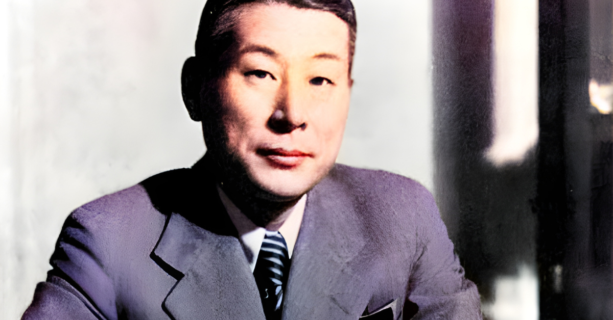
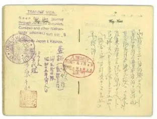
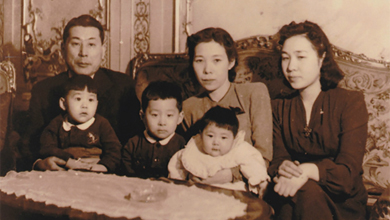

Chiune Sugihara was a great man that lived for 86 years, saved many many people, and is still considered one of the most important men during the holocaust.

Chiune Sugihara made fake visas to give to the hundreds of refugees that showed up at his house to flee from persecution. He ended up making 2140 visas, and saved about 6,000 people, sending them through Russia, to Japan. Sugihara had orders not to give the visas to anybody, but he did anyway, and ended up going to prison. On the train to the prison, he made more visas and threw them out the window. In later years, he rarely showed up to interviews, but he did say that he helped all of these people because it was the human thing to do. However, there were other speculations. There was one that thought that he only helped some people in order to hide some of his contributors.

Even today, people see him a hero. There is an estemated 1,000,000 desendates from people that he saved, with about 40,000 of people that he directly saved still alive. these people are called "Sugihara survivors" Chine sugihara is considered a paragon of virtue and a national hero. In ovtober 2018 , there was an effort to rememeber Chiune, and representatives from Japan, Poland, Ireal, and the U.S. all came to the commeration.
